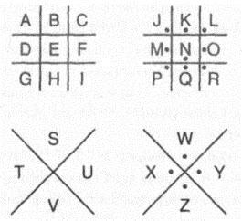
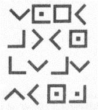

49. BÖLÜM
Cep telefonunu kapatan Langdon’ın endişesi giderek artıyordu. Katherine telefonuna cevap vermiyor! Katherine laboratuvardan güvenle ayrılıp, burada kendisiyle buluşmak üzere yola çıktığında aramaya söz vermişti, ama hâlâ aramamıştı.
Bellamy okuma odasındaki sırada Langdon’ın yanında oturuyordu. Bu arada güvenli bir yerde saklanıp, sığınmalarına yardımcı olabileceğini düşündüğü birine telefon açmıştı. Ne yazık ki bu kişi de cevap vermediğinden, Bellamy hemen Langdon’ın cep telefonunu aramasını söyleyen acil bir mesaj bırakmıştı.
Langdon’a, “Denemeye devam edeceğim,” dedi. “Ama şimdilik kendi başımızın çaresine bakacağız. Ve bu piramit için bir plan yapmak zorundayız.”
Piramit. Artık sadece önündekileri -bir taş piramit, kapak taşının bulunduğu mühürlü bir paket, karanlığın içinden çıkıp onu CIA sorgusundan kurtaran, şık bir Afro-Amerikalı adam- düşünebilen Langdon için okuma odasının görkemi birden kaybolmuştu.
Langdon, Kongre Binası Mimarı’ndan bir nebze olsun mantıklı davranmasını beklerdi ama Warren Bellamy’nin sözlerinin de Peter’ın arafta olduğunu iddia eden deliden bir farkı yoktu. Bellamy, bu taş piramidin gerçekten de efsanedeki Mason Piramidi olduğu konusunda ısrar ediyordu. Bizi güçlü bilgeliğe götürecek olan eski bir harita mı?
Langdon kibarca, “Bay Bellamy,” dedi. “İnsanlara müthiş güç sağlayacak olan bir tür eski bilginin bulunduğu fikrini... gerçekten ciddiye alamıyorum.”
Bellamy’nin gözlerinden hem hayal kırıklığı, hem de heves okunuyordu. Bu durum, Langdon’ın şüpheciliğini daha da kamçılamıştı. Bellamy her şeye rağmen, “Evet profesör,” dedi. “Böyle hissedebileceğini zaten tahmin etmiştim, sanırım şaşırmamam gerek. Sen dışarıdan içeriye bakıyorsun. Efsane gibi algılayacağın bazı mason gerçekleri var, çünkü bunları anlamanı sağlayacak uygun eğitimi almadın.”
Langdon şimdi kendisine patronluk taslandığını düşünüyordu. Odiseus'un tayfasında da yoktum ama Kiklop’un efsane olduğuna eminim. “Bay Bellamy, efsane doğru olsa bile... bu piramit. Mason Piramidi olamaz.” “Olamaz mı?” Bellamy, tek parmağını taşın üstündeki mason şifresinde gezdirdi. “Bana, tasvire mükemmel biçimde uyuyormuş gibi geliyor. Parlak metal kapak taşıyla, taş bir piramit. Sato’nun röntgen filmine bakılacak olursa, Peter’ın sana emanet ettiği şey bu.” Küp biçimindeki ufak paketi eline alıp, ağırlığını tarttı.
Langdon, “Bu piramit otuz santimden daha küçük,” diye karşı çıktı. “Hikâyenin duyduğum her uyarlamasında, Mason Piramidi’nin devasa boyutlarda olduğu anlatılır.”
Bellamy’nin buna hazırlıklı olduğu anlaşılıyordu. “Bildiğin gibi efsane, piramidin Tanrı’nın ulaşıp dokunabileceği kadar yüksek olduğundan bahseder.”
“Kesinlikle.”
“İçine düştüğün çıkmazı anlıyorum profesör. Fakat, hem Antik Gizemler hem de mason felsefesi, her birimizin içindeki Tanrısallığı över. Sembolik açıdan konuşursak, aydınlanmış bir insanın ulaşabileceği herhangi bir şey... Tanrı’nın ulaşabileceği yerdedir.”
Langdon kelime oyunundan etkilenmemişti.
Bellamy, “Kitabı Mukaddes bile aynı görüştedir,” dedi. “Eğer Yaradılış’taki ‘Tanrı insanı kendi suretinden yaratmıştır,’ sözünü kabul ediyorsak, onun neyi ima ettiğini de kabul etmek zorundayız; insanoğlu Tanrı’dan daha aşağı yaratılmamıştır. Luka 17:20’de{50} bize ‘Tanrı’nın egemenliği içinizdedir,’ denir.”
“Üzgünüm ama kendini Tanrı’nın dengi kabul eden bir Hıristiyan tanımıyorum.”
Bellamy daha sert bir sesle, “Elbette yok,” dedi. “Çünkü Hıristiyanların çoğu ikisini birden ister. Gururla İncil’e inandıklarını ilan etmek isterler ama inanması çok zor veya zahmet verici kısımları görmezden gelirler."
Langdon cevap vermedi.
Bellamy, “Her neyse,” dedi. “Mason Piramidi’nin Tanrı’nın dokunabileceği kadar yüksek olduğu tanımlaması... boyutları konusunda yanlış yorumlamalara sebep oldu. Bu yüzden senin gibi akademisyenler de piramidin efsane olduğunda ısrar ettiler ve kimse ne olduğunu araştırmadı.” Langdon taş piramide baktı. “Seni hayal kırıklığına uğrattığım için üzgünüm,” dedi. “Mason Pirmadi’nin her zaman bir efsane olduğuna inandım.”
“Peki, taş ustalarının meydana getirdiği bir haritanın taşa oyulması sana da son derece uygun gelmiyor mu? Tarih boyunca en önemli işaretler hep taşa kazındı, davranışlarımıza yön vermemiz için Tanrı’nın Musa’ya verdiği On Emir de buna dahil.”
“Evet, anlıyorum ama ismi hep Mason Piramidi efsanesi diye geçer. Efsane ifadesi, hayal ürünü olduğunu gösterir.”
“Evet, efsane. ’’Bellamy kendi kendine güldü. “Korkarım sen de Musa’yla aynı dertten muzdaripsin.”
“Anlamadım?”
Bellamy sandalyesinde dönüp, on altı bronz heykelin aşağıyı izlediği ikinci kat balkonuna bakarken adeta eğleniyormuş gibiydi. “Musa’yı görüyor musun?”
Langdon bakışlarını kütüphanenin ünlü Musa heykeline kaldırdı. “Evet.”
“Boynuzları var.”
“Farkındayım.”
“Ama neden boynuzları olduğunu biliyor musun?”
Öğretmenlerin çoğu gibi. Langdon da kendisine ders verilmesinden hoşlanmazdı. Yukarıdaki Musa heykelinin başında boynuzlar bulunmasının sebebi, binlerce Hıristiyan heykelinde Musa’nın boynuzlarının olmasıyla aynı sebeptendi. Mısır’dan Çıkış kitabının hatalı tercümesi. Asıl İbranice metinde Musa’nın “kararı 'ohr panav’ı” olduğu yazıyordu, yani “yüzünün teni ışık demetiyle parlıyordu”. Ama Roma Katolik Kilisesi, Kitabı Mukaddes’in resmi Latince tercümesini yaptırırken, çevirmen Musa’nın tasvirini yanlış anlayıp “comuta esset fades sua” diye tercüme etmişti. Yani “yüzünde boynuzları vardı”. O andan itibaren, ayetlere sadık
kalmazlarsa kendilerinden öç alınacağından korkan ressam ve heykeltıraşlar, Musa’yı boynuzlarıyla betimlemeye başlamışlardı.
Langdon, “Basit bir hataydı,” diye yanıtladı. “MS yaklaşık 400 yıllarında St. Jerome’nin yanlış tercümesi.”
Bellamy etkilenmiş gibi bakıyordu. “Kesinlikle. Yanlış tercüme: Ve bunun sonucunda... zavallı Musa tarih boyunca deforme edildi.”
“Deforme edildi” cümlesi durumu güzel ifade ediyordu. Langdon çocukluğunda Michelangelo’nun şeytani Boynuzlu Musa’sını gördüğünde dehşete düşmüştü. Bu heykel San Pietro in Vincoli’nin en önemli öğesiydi.
Bellamy, “Boynuzlu Musa örneğini, yanlış anlaşılan tek bir kelimenin tarihi nasıl değiştirebileceğini göstermek için verdim,” dedi.
Bu dersi birkaç yıl önce Paris’te ilk elden öğrenen Langdon, tereciye tere satıyorsun, diye düşündü. SanGreal: Kutsal Kâse. SangReal: Soylu Kan.
Bellamy, “Mason Piramidi konusunda insanlar bir ‘efsane’ hakkında söylentiler duydular,” diye devam etti. “Ve bu fikir yapışıp kaldı. Mason Piramidi efsanesi söylence gibi geliyordu. Ama efsane kelimesi aslında başka bir şeyden bahsediyordu. Yapısı değiştirilmişti. Tıpkı tılsım kelimesi gibi.” Gülümsedi. “Dil, gerçeği saklamakta oldukça usta.”
“Size katılıyorum ama bu noktadan sonrasını anlamıyorum.” “Robert, Mason Piramidi bir harita. Ve tüm haritalar gibi onun da bir efsanesi var. Yani nasıl okuman gerektiğini gösteren bir anahtarı.” Bellamy küp şeklindeki paketi eline alıp, yukarı kaldırdı. “Görmüyor musun? Bu kapak taşı, piramidin efsanesi. Yeryüzündeki en güçlü sanat eserinin nasıl okunacağını gösteren bir anahtar... insanoğlunun en büyük hâzinesinin -tüm çağların kayıp bilgeliğinin- saklandığı yeri ortaya çıkaran bir harita.” Langdon susmuştu.
Bellamy, “Söylemek zorundayım ki,” dedi. “Senin şu ulu Mason Piramidi’n, sadece bu... Altın kapak taşı Tanrı’nın dokunabileceği kadar yukarı yükselen, mütevazı bir taş. Aydınlanmış birinin uzanıp dokunabileceği yükseklikte.”
İkisinin arasında birkaç saniye süren bir sessizlik oldu.
Yeni bir açıdan değerlendirebileceğini gördüğü piramide bakan Langdon, içinde beklenmedik bir heyecan hissetti. Gözleri tekrar masonik şifreye kaydı. “Ama bu şifre... o kadar...”
“Basit mi?”
Langdon başını salladı. “Bunu herhangi biri çözebilir.”
Bellamy gülümseyip, Langdon’a bir kâğıtla kalem uzattı. “Belki o zaman sen bizi aydınlatabilirsin?”
Langdon şifreyi okuyup okumamak konusunda kararsızdı, ama içinde bulundukları şartları göz önüne alınca bu, Peter’a karşı ufak bir ihanet gibi kalıyordu. Bunun dışında yazı ne derse desin, herhangi bir şeyin saklandığı yeri ortaya çıkaracağını sanmıyordu... kaldı ki bu, tarihin en büyük hâzinelerinden biri olsun.
Langdon, Bellamy’nin uzattığı kalemi alıp, çenesine vurarak şifreyi incelemeye başladı. Şifre o kadar basitti ki, kalem kâğıda ihtiyacı yoktu bile. Buna karşın hataya pay bırakmamak için kalemle kâğıdı kullanıp, mason şifresini çözmekte en sık kullanılan deşifre anahtarını yazdı. Alfabenin sırasına uygun olarak dizilen anahtar, ikisi düz, ikisi noktalı toplam dört sistemden oluşuyordu. Alfabenin her bir harfi, benzersiz biçimdeki bir “duvar” ya da “kafese” yerleştirilmişti. Her bir harfin duvarının şekli, o harfin sembolüydü.
Plan o kadar basitti ki, neredeyse çocuk işiydi.

Langdon çıkardığı işi iki kere kontrol etti. Deşifre anahtarının doğruluğundan emin olduktan sonra, dikkatini piramidin üstündeki şifreye verdi. Kodlamayı çözmesi için tek yapması gereken deşifre anahtarında eşleşen şekli bulmak ve içindeki harfi yazmaktı.

Piramidin üstündeki ilk karakter, aşağıya bakan oka veya bir kadehe benziyordu. Langdon kadeh şeklindeki kısmı deşifre anahtarında hemen buldu. İçinde S harfi yer alıyordu.
Langdon S yazdı.
Piramitteki ikinci sembol, sağ kenarı eksik bir noktalı kareydi. Deşifre anahtarında bu O harfine karşılık geliyordu.
O yazdı.
Üçüncü sembol basit bir kareydi ve içinde E harfi vardı.
Langdon E yazdı.
S O E...
Tümünü tamamlayana kadar hızlanarak devam etti. Langdon bitmiş çevirisine bakarken, şaşkınlık dolu bir iç çekti. Büyük bir buluş yaptığım söylenemez.
Bellamy’nin yüzünde bir tebessüm belirir gibi oldu. “Bildiğin gibi profesör, Antik Gizemler sadece gerçekten aydınlananlar için korunmuştur.”
Kaşlarını çatan Langdon, “Doğru,” dedi Anlaşılan ben hak etmiyorum.